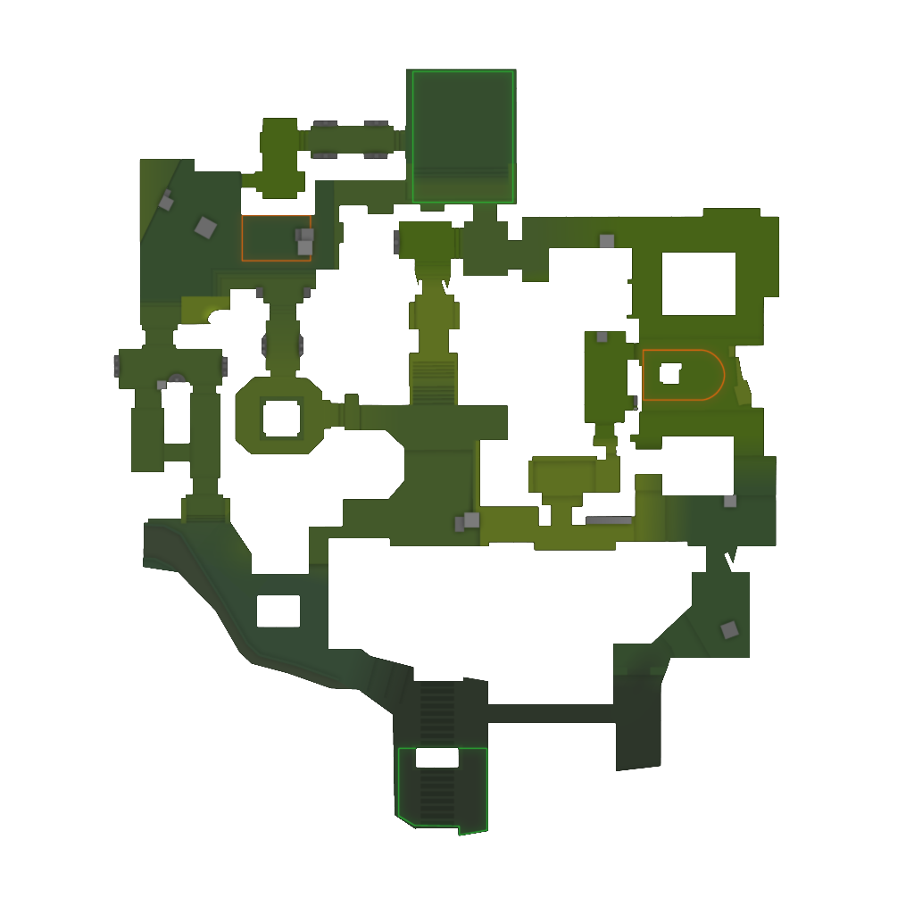

Your matches
5 reviewed, 1 in progress
13–7Won
12 November, pawcio_
Next: 03 Dry peek at A main

Parse demo
stage 5 of 10
13–11Won
8 November, pawcio_
Reviewed, 5 clips
Ancient
9–13Lost
10 November, pawcio_
Radar only, the recorder was off
New
Drop a demo to review it
.dem from CS Demo Manager or .dem.zst from FACEIT, on Ancient or Anubis
What keeps coming back
Ask the coach about any of these from the Coach page.
Shot while moving3 of 5 matches
Unused utility2 of 5
Entry killkeep doing it